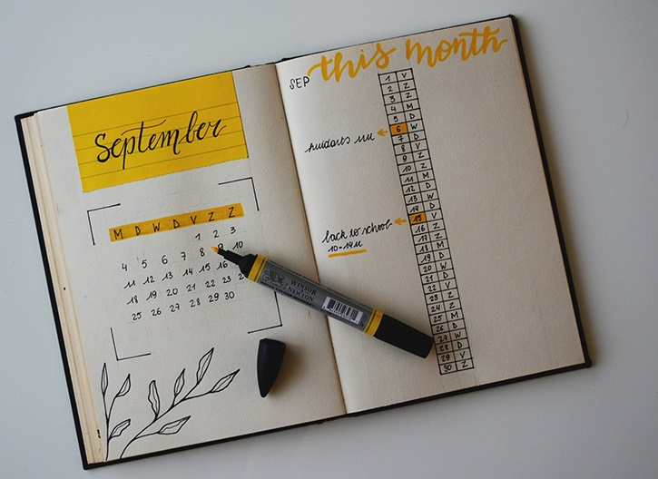

Diário de Humor

Manter um diário de humor é uma ferramenta poderosa para identificar padrões de comportamento e emoções.
Ajuda a reconhecer claramente as situações-gatilho que despertam emoções intensas. É recomendável
registrar emoções e indicar escalas para ansiedade, concentração, irritabilidade, apetite,
desejo sexual e impulso para compras. Essas informações são cruciais para rastrear sintomas de mania e depressão.
Um exemplo prático de diário de humor pode ser:
| Situação | Sentimento | Intensidade | Comportamento | Alternativa |
|---|---|---|---|---|
| Em uma reunião de trabalho, discuti com um colega sobre um projeto. | Frustração e raiva | 8 | Expressei minha opinião de forma assertiva, mas um pouco exaltada. | Poderia ter mantido a calma e procurado entender melhor o ponto de vista do colega antes de responder. |
| Situação | Sentimento | Intensidade | Comportamento | Alternativa |
|---|---|---|---|---|
| Hoje durante o dia percebi que não parava de apertar os dentes e balançar a perna. | Ansiedade | 7.5 | Ontem fui dormir mais tarde assistindo uma série e acordei mais tarde que o normal para o trabalho/escola | Poderia ter mantido a calma e procurado entender que está tudo bem dormir um pouco mais, isso não vai quebrar minha rotina |
Essas anotações oferecem insights valiosos para a terapia, facilitando a identificação de comportamentos que podem ser sintomas de bipolaridade, em vez de meros hábitos pessoais.
Que tal começar o seu diário hoje mesmo?